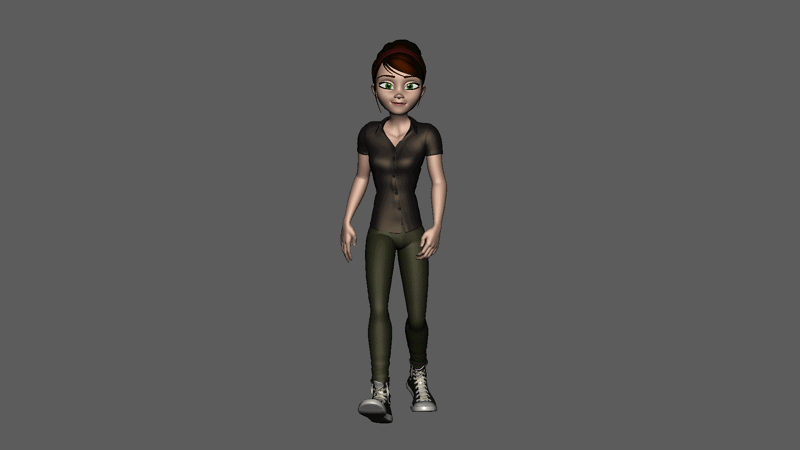
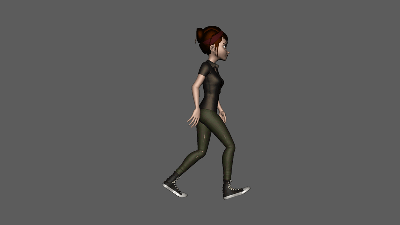
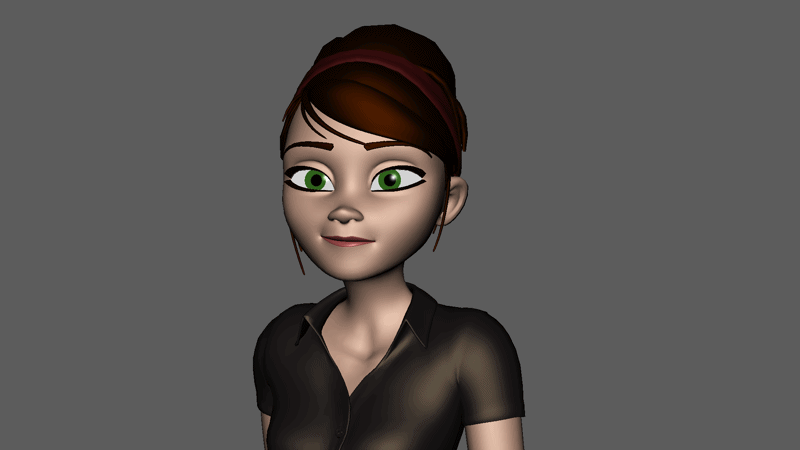
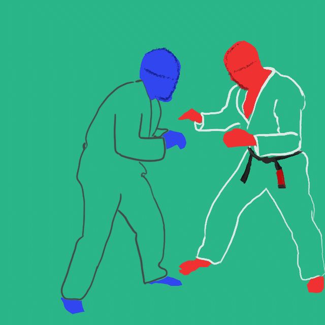
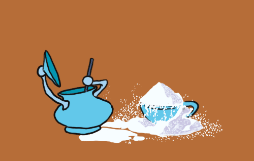
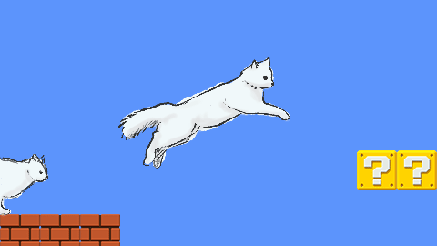

Trabajo audiovisual y desarrollo interactivo
Aquí muestro lo que hago: edición, animación, prototipos en Unity y proyectos construidos desde la idea hasta la implementación.
Juegos — Scripts y builds
Repositorio y demos jugablesPrototipos jugables y desarrollo de mecánicas en Unity.


Audiovisual — Edición y composición
Animación







Proyecto Narrativo — Neonubis
Documentación de desarrollo · Animación 2D / 3DDesarrollo escrito del proyecto: construcción narrativa, diseño conceptual y planificación visual.
Proyecto Videojuego — Kurdo
Documentación de desarrollo · Juegos y Entornos InteractivosDesarrollo escrito del proyecto: propuesta conceptual, objetivos, requisitos, control de calidad y simulación de errores.
Sobre mí
Me interesa entender cómo funcionan las cosas por dentro. No solo que algo se vea bien, sino saber por qué funciona, cómo está construido y cómo podría hacerse mejor.
Disfruto mezclando lo técnico con lo creativo: editar hasta que el ritmo encaja, programar una mecánica hasta que responde como debe, o construir una historia desde cero y llevarla hasta algo tangible.
Este portfolio no es una colección de piezas sueltas, sino el rastro de ese proceso: probar, fallar, ajustar y volver a construir.